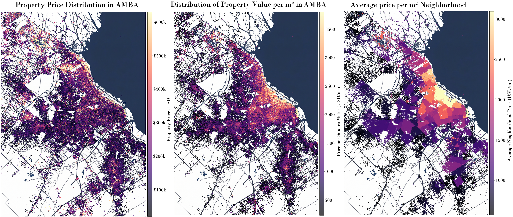

Project Overview
This project is a direct continuation of the Buenos Aires Property Price Prediction Model, in which a multi-step non linear model was designed to estimate real estate prices based on a variety of property features. Building on that foundation, this study takes a deeper and more granular approach: rather than focusing solely on price prediction, here we analyze each relevant factor independently, exploring its distribution, behavior, and relationship with the final sale price.
In this case, we will focus on some of the ideas that led to the creation of the model and analyze some very specific, interesting factors unique to property sales in Buenos Aires.
General Review of Property Prices
A first look at the dataset shows a vast variety in the price range, as well as for the different types of properties for sale: houses, retail spaces, office buildings, land, etc.
To illustrate all this, we can observe the first map from left to right below, where only the prices of the different properties for sale were plotted. In it, you can see that there are regions that have a higher baseline cost due to their location. This is a first sign that house prices are affected by the neighborhood in which they are located.
To verify this, let's look at the second map, where we plotted the price per square meter (m²) for each of the homes. This way, the variability in the price range by region can be seen even more clearly.
This shows us that the concept of price per square meter becomes essential when analyzing properties across each of the neighborhoods. This leads to the idea of treating each neighborhood as a completely independent ecosystem, where any approach taken follows the cultural patterns of that specific neighborhood.
Just to show the impact that the dwelling has in relation to the neighborhood, let's look at the last map. In this case, what was plotted was the average price per square meter of the entire neighborhood. This allows us to identify at a glance which areas will be the most and least expensive to buy or build in.

Surface per m²
The distribution of property surface area varies considerably depending on the zone. Within CABA (Ciudad Autónoma de Buenos Aires), properties tend to be more compact, with a concentration of units in the 30–80 m² range, reflecting the prevalence of apartments in a dense urban environment. Outside of CABA, the distribution shifts noticeably toward larger surfaces, with a higher frequency of houses and properties exceeding 100 m².

Returning to the price per square meter, when we analyze neighborhood by neighborhood, we see that this value is considerably higher for properties located in CABA, whereas for areas outside of it, this value is considerably lower. In fact, if we were to rank the price per square meter for each neighborhood, the neighborhood with the highest price per square meter in GBA and the Atlantic coast (areas that contain more than double the number of properties for sale) would only appear in the 20th position!
The chart below breaks down which are the most expensive neighborhoods in each of the zones.

Bedrooms and Bathrooms
The number of bedrooms and bathrooms in a property is one of the most intuitive indicators of its size and intended use. Analyzing their individual distributions shows that the vast majority of listings fall in the 1–3 bedroom range, with 2-bedroom properties being by far the most common. Bathrooms follow a similar pattern, though single-bathroom properties are significantly more frequent, especially in smaller apartments.

More interesting, however, is the relationship between these two variables and the total surface area. As expected, properties with more bedrooms and bathrooms tend to have larger surfaces — but the correlation is not always linear, and there is notable variability within each category. Some properties pack multiple bedrooms into a relatively small footprint, while others offer few rooms but generous total space. These relationships help reveal the different typologies present in the market and are important inputs for the predictive model.
In the chart below, these average relationships can be found plotted with 95% confidence intervals. This allows us to see the range within which we can find properties possessing these characteristics with this level of certainty.

Amenities
Beyond the physical characteristics of a property, the presence of amenities — such as swimming pools, gyms, doorman service, parking spaces, or outdoor spaces — plays a meaningful role in determining its market value. Properties that offer a broader set of amenities consistently tend to command higher prices, even when controlling for surface area and location.
In the image below, you can see the top 15 most common amenities for the two analyzed zones.

What we observe is that although there are cases where the proportion remains the same, there are other cases where this changes. For example, in the case of a 'Garage', 'Garden', or 'Patio', there is a clear tendency for these to exist in areas outside CABA due to the ease of finding large, unbuilt spaces in these locations.